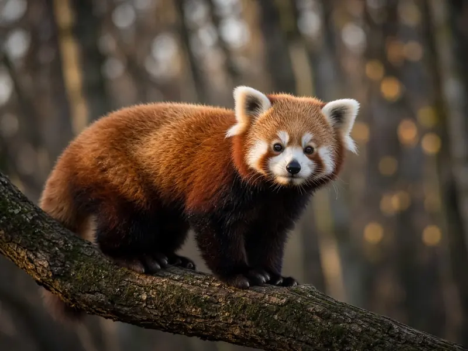

Where do red pandas live?

Wild red pandas live in high mountain forests with bamboo in Nepal, India, Bhutan, northern Myanmar and southwest China, including Tibet. They are not a wild animal on any other continent. Zoos elsewhere keep red pandas, but those animals are not a wild population.
Five countries, and only those
Smithsonian's National Zoo says red pandas live in high-altitude, temperate forests with bamboo understories in the Himalayas and other high mountains. Its species page traces them from northern Myanmar, also called Burma, to western Sichuan and Yunnan in China, and also to suitable habitat in Nepal, India and Tibet.
WWF UK lists the same countries in one line: high-altitude forests of Nepal, India, Bhutan, Myanmar and China. San Diego Zoo Wildlife Alliance says today's animals live in small, isolated mountain territories in China, Nepal, India, Bhutan and Burma. None of these pages places a wild population outside that range.
The country list is wider than the giant panda's. Wild giant pandas live only in China, in six mountain ranges, which where do giant pandas live in the wild? covers. Both species sit together on the habitat and range guide.
A Himalayan form and a Chinese form
Field guides usually split the range in two. WWF UK says there are two formally recognised subspecies, and that recent studies suggest they might be two species. It calls Ailurus fulgens fulgens the slightly smaller form, mostly in Nepal and also in India, Myanmar and Bhutan, and Ailurus fulgens refulgens the form primarily found in China.
The National Zoo's red panda facts page draws Myanmar the other way. It says genetic studies suggest the old subspecies may be two species, Ailurus fulgens fulgens and Ailurus fulgens styani (also called Ailurus fulgens refulgens). On that page the Himalayan form lives predominantly in Nepal and also in India and Bhutan, while the Chinese form is primarily in China and Myanmar and tends to be larger and deeper red. The zoo's species page gives the same split.
The San Diego Zoo Wildlife Alliance library fact sheet says both forms occur in China. It lists the Himalayan red panda in Bhutan, India, Nepal, northern Myanmar and China, and the Chinese red panda in Sichuan, Yunnan and Tibet, with local extinction in parts of the historic Chinese range. The pages share the band from the Himalayas into southwest China. They do not all put Myanmar on the same side of the split. Names are on the red panda facts page.
How high the forest sits
Elevation is where the summaries disagree, so the figures below stay with the page that printed them.
San Diego Zoo Wildlife Alliance's animals page says red pandas live in mountain territories above 4,000 feet. Its library fact sheet, compiling field studies, gives a typical band of 2,500 to 4,000 meters (8,200 to 13,000 feet), with records down to 2,200 meters (7,200 feet) and, in summer, nearly 5,000 meters (16,000 feet). A camera-trap study in eastern Nepal cited there recorded a low of 2,100 meters (6,900 feet). The sheet says the range looks wider in China in data compiled by Thapa and colleagues in 2018.
Lower forest is uncommon, not missing. The fact sheet says some animals in India live in warmer tropical forest from 700 to 1,400 meters (2,300 to 4,600 feet). It also says red pandas may once have used land below 2,000 meters (6,600 feet) more often, before so much of that forest was taken. "Above 4,000 feet" and "typically 2,500 to 4,000 meters" are two descriptions from the same organisation, not one converted number.
Read next

Bamboo, water and trees
A pin on a map is not habitat. The National Zoo says red pandas need water nearby, the right forest cover and altitude, and enough bamboo. Bamboo grows unreliably in degraded habitat, so a cut-over slope is not a thinner version of a red panda forest.
WWF UK calls them mainly arboreal, often living close to water and in places densely covered with bamboo. The San Diego Zoo animals page says they live mostly in cool, temperate forest with a shrubby understory of thick bamboo, and that they prefer fallen logs, tree stumps and fresh water. In China, that page says, red pandas and giant pandas share bamboo forest.
The library fact sheet is more specific about the trees. Red pandas are most common in mountain forest with a dense bamboo understory: broadleaf, coniferous, fir, pine and oak-laurel forest, mixed forest with a bamboo thicket, or forest dominated by rhododendrons. Lower sites can be subtropical, and a few are tropical. Bamboo thickets provide cover. Mature trees provide dens for birth and for raising cubs. The sheet says they seem to prefer closed forest and smaller trees, which are easier to climb and may buffer cold and rain. They commonly use slopes, places nearer water, and habitat with more bamboo and canopy.
Most of the diet is that bamboo, so trees alone are not enough. Details are in what do red pandas eat? How far one animal travels inside this forest is a separate question: how big is a red panda's home range?
Why suitable forest is harder to keep
The National Zoo says red pandas are endangered and legally protected in India, Bhutan, China, Nepal and Myanmar. It names habitat loss and degradation, human interference and poaching as the main threats, and says researchers believe the total population has declined by 40 percent over the past two decades, with that decline likely to continue. Animals remain in some protected parks in Myanmar, Bhutan, India, Nepal and China. The same page says livestock grazing, hunting and logging still happen in many of those parks.
The zoo ties that loss mainly to logging, grazing, firewood, encroachment and farming. Livestock can compete for bamboo leaves, and clearing for crops removes food and shelter. Domestic dogs can hunt red pandas or pass on disease, including canine distemper. Fragmented forest isolates groups, which the zoo links to inbreeding, and it says the illegal pet trade has reportedly been on the rise in Asia.
Population totals are not settled, and each figure belongs to the page that printed it. WWF UK says the IUCN lists red pandas as Endangered, that numbers are believed to be less than 10,000, and that the exact figure is unknown. It lists habitat loss, fragmentation and degradation, plus poaching for food, medicine, the pet trade and the coat, and adds disease, natural disasters and climate change. Its climate point is specific: as temperatures rise, red pandas will need to move higher. The National Zoo news page states a steeper drop than the species page, more than 50 percent over the last 20 years, and says scientists estimate there may only be 2,500 red pandas left. San Diego Zoo Wildlife Alliance says some estimates put adults at 2,500. Those sentences are not one census written three ways.
The San Diego Zoo animals page counts 20 protected areas with red pandas in India, 35 in China, 8 in Nepal and 5 in Bhutan. More on the threats is in why are red pandas endangered?
A wide range that is still a narrow forest
On the large points the sources agree. Wild red pandas live in mountain forest from Nepal through India, Bhutan and northern Myanmar into Tibet and southwest China. They need bamboo, tree cover and water, and they spend much of life in the trees. Elevation bands, which form lives in Myanmar, and how many animals remain differ among these pages. A zoo animal is not evidence the species lives in that country. The wild map is the Himalayas and southwest China, and the forest inside that map decides whether an animal can stay.
Frequently asked questions
Where do red pandas live in the wild?
In high forests with bamboo in Nepal, India, Bhutan, Myanmar and China, including Tibet, Sichuan and Yunnan. They are not a wild animal anywhere else.
How high up do red pandas live?
San Diego Zoo Wildlife Alliance's library fact sheet says they are typically found between 2,500 and 4,000 meters, with published records lower and higher. The zoo's animals page describes today's animals as living above 4,000 feet. The two pages are not the same measurement.
Do red pandas live with giant pandas?
San Diego Zoo Wildlife Alliance says that in China the two species share bamboo forests. Wild giant pandas live only in China. Red pandas also live in Himalayan countries to the west.
Are wild red pandas found outside Asia?
No. Zoo animals in other countries are not wild populations.
Do the Himalayan and Chinese red pandas live in different countries?
Sources describe a Himalayan form and a Chinese form, and both are reported from China. They do not all draw the boundary in Myanmar in the same place.
Related guides

Sources
- Smithsonian's National Zoo and Conservation Biology Institute: Red panda
- Smithsonian's National Zoo: Is a red panda a bear? And more red panda facts
- WWF UK: Top 5 facts about red pandas
- San Diego Zoo Wildlife Alliance: Red panda
- San Diego Zoo Wildlife Alliance Library: Red panda fact sheet, distribution and habitat
Cite this page
APA
PandasWise. (2026, November 18). Where do red pandas live? https://pandaswise.com/blog/where-do-red-pandas-live.html
MLA
"Where do red pandas live?" PandasWise, 18 Nov. 2026, https://pandaswise.com/blog/where-do-red-pandas-live.html.
Chicago
PandasWise. "Where do red pandas live?" PandasWise. November 18, 2026. https://pandaswise.com/blog/where-do-red-pandas-live.html.